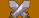
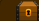
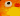
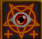
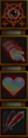
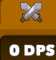
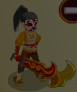

import time def clickleft(n): for x in range(n): mouseDown(Button.LEFT) mouseUp() def clickn(what=None, n=1, mod=0): if what: hover(what) else: hover(getLastMatch()) clickleft(n) def zclick(thing, count): hover(thing) keyDown('z') wait(0.05) clickleft(count) wait(0.05) keyUp('z') wait(0.1) return True def rest(delay=0.1): if exists(): hover() wait(delay) def findDown(thing, func, args=[]): while not exists(thing, 0.1): # find scrollbar if exists(Pattern().similar(0.86), 0): # scroll down clickn(Pattern().similar(0.77).targetOffset(0,2), 4) if buyUpgrades(): break rest() if exists(thing, 0.1): return func(thing, *args) else: return False def saveGame(): if exists(Pattern().similar(0.90)): click() if exists(Pattern().similar(0.80)): click() wait(0.5) timestr = time.strftime("%Y_%m_%d_%H_%M_%S") type(timestr) keyDown(Key.ENTER) wait(0.05) keyUp(Key.ENTER) wait(0.05) if exists(Pattern().similar(0.80)): click() # scroll to bottom of hero list # check for target # if it exists, call func against it def findUp(thing, func, args=[]): scrollBottom() while not exists(thing, 0): # scroll up button if exists(Pattern().similar(0.83),0): clickn(Pattern().similar(0.83), 4) # scrolled to top if exists(Pattern().similar(0.90),0): break if exists(thing, 0): return func(thing, *args) else: return False def progressMode(): if exists(Pattern().similar(0.89),0): click() Debug.user("enable progress mode") return True return False def buyUpgrades(): if exists(Pattern().similar(0.85),0): click() return True return False def scrollBottom(): # scroll up once to avoid getting stuck immediately after a new hero is available if exists(Pattern().similar(0.83), 0): click() if exists(Pattern().similar(0.90).targetOffset(0,-13), 0): click() # Buy All Upgrades while not exists(Pattern().similar(0.85), 0): rest(0.05) # find scrollbar if exists(Pattern().similar(0.90).targetOffset(0,-13), 0): # scroll down clickn(Pattern().similar(0.90).targetOffset(0,-13), 4) wait(0.20) def scrollTop(): # find scroll bar at the top while not exists(Pattern().similar(0.80),0): # click crossed swords if exists(Pattern().similar(0.90)): click() def ascend(): Debug.user("ascending now") scrollTop() # Relics if exists(Pattern().similar(0.90),1): click() wait(0.5) # Salvage if exists(,1): click() wait(0.5) # Yes if exists(Pattern().similar(0.90),1): click() scrollTop() # Amenhotep findDown(Pattern().similar(0.75).targetOffset(-74,57), click, []) # Yes if exists(Pattern().similar(0.91)): click() resetstate() rest() saveGame() # find fish def fish(): if exists(Pattern().similar(0.85),0): click() Debug.user("fish") # find available dark ritual with energize etc def darkRitual(): if exists(Pattern().similar(0.90)): if exists(Pattern().similar(0.80),0): Debug.user("activate dark ritual") keyDown('8') wait(0.1) keyUp('8') wait(0.1) keyDown('6') wait(0.1) keyUp('6') wait(0.1) keyDown('9') wait(0.1) keyUp('9') wait(0.1) ############### def exithotkey(event): exit() def ascendhotkey(event): ascend() Env.addHotkey(Key.F1, KeyModifier.CTRL, exithotkey) Env.addHotkey(Key.F2, KeyModifier.CTRL, ascendhotkey) setShowActions(True) Settings.UserLogs = True Settings.UserLogPrefix = "user" Settings.UserLogTime = True Debug.on(2) Debug.setLogFile("d:\\cygwin\\home\\sic\\ch\\ch.log") Settings.ObserveScanRate = 3 state = { 'ascended': True, 'besthero': False, 'level': 0, 'hired':0 } def levelchange(event): # Debug.user("Levelchange handler") state['level'] += 1 event.stopObserver() # event.repeat(1) def checklevel(duration=5): before = state['level'] levelregion = None if exists(Pattern().similar(0.85)): r = getLastMatch() r.setX(r.getX() - 100) r.setY(r.getY() - 510) r.setH(30) r.setW(300) levelregion = Region(r.getX(), r.getY(), r.getW(), r.getH()) # levelregion.highlight() levelregion.onChange(50, levelchange) levelregion.observe(duration) return before != state['level'] def resetstate(): state = { 'ascended': True, 'besthero': False, 'level': 0, 'hired':0 } # find top coin to make the window active if exists(Pattern().similar(0.90)): click() r = getLastMatch() r.setX(r.getX() - 30) r.setY(r.getY() - 100) r.setH(r.getH() + 650) r.setW(r.getW() + 1100) setROI(r.getX(), r.getY(), r.getW(), r.getH()) Debug.user("") Debug.user("Start") saveGame() while True: Debug.user("Loop start: %s" %state) # 0 DPS if exists(Pattern().similar(0.93),1): Debug.user("found 0 dps") state['ascended'] = True first = True for x in range(16): # skip levels clickn(, 18) rest() clickn(Pattern().targetOffset(-60,0), 1) # click next to shop if first: if exists(Pattern().similar(0.85).targetOffset(-60,0)): clickn(getLastMatch(), 25) first = False Debug.user("findDown samurai") findDown(Pattern().similar(0.90).targetOffset(-330,0), zclick, [20]) wait(2) progressMode() fish() darkRitual() if state['ascended']: scrollTop() Debug.user("findDown samurai") if findDown(Pattern().similar(0.90), lambda x: True): r = getLastMatch() r.setW(r.getW() + 30) r.setX(r.getX() - 110) r.setH(r.getH() - 40) # r.highlight() # wait(1) # r.highlight() try: r.find(Pattern().similar(0.80)) state['ascended'] = False Debug.user("found leveled samurai") except: pass if state['ascended']: Debug.user("level up samurai") findDown(Pattern().similar(0.75).targetOffset(-208,23), zclick, [20]) scrollBottom() buyUpgrades() scrollTop() progressMode() Debug.user("findDown hire: %s" %(state['hired'])) hired = 0 while state['ascended'] and \ state['hired'] < 25 and \ findDown(Pattern().similar(0.90), zclick, [8]): rest(0.01) # unhirable if exists(Pattern().exact(),0): break if exists(Pattern().exact(),0): break # gilded if exists(Pattern().similar(0.85)): break hired += 1 state['hired'] += 1 if hired > 3: break Debug.user("findDown hire done: %s"% hired) else: if checklevel(): Debug.user("Level changed") else: Debug.user("Level not changed") ascend() rest() continue # find inactive progression mode if progressMode(): ascend() rest() continue # gilded Debug.user("look for gilded heroes") if findUp(Pattern().similar(0.93).targetOffset(46,33), zclick, [10]): if not state["besthero"]: r = getLastMatch() r.setX(r.getX() + 40) r.setY(r.getY() + 140) r.setH(30) r.setW(100) wait(0.5) hirebutton = Region(r.getX(), r.getY(), r.getW(), r.getH()) # hirebutton.highlight() # wait(2) # hirebutton.highlight() rest() try: hirebutton.find(Pattern().similar(0.90)) Debug.user("failed to level best hero") if exists(Pattern().similar(0.85).targetOffset(16,11)): zclick(getLastMatch(), 10) Debug.user("leveled secondary gilded hero") except: Debug.user("found hired best hero") state['besthero'] = True pass else: findUp(Pattern().similar(0.85).targetOffset(16,11), zclick, [10]) Debug.user("leveled secondary hero, didn't find primary") scrollBottom() buyUpgrades() Debug.user("done with gild level up") Debug.user("Loop done: %s" %(state))